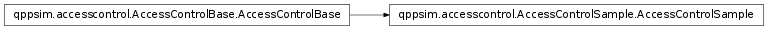

qppsim.accesscontrol.AccessControlSample module¶
Documentation¶
Implementation of the Access Control module with a basic behavior.
-
class
qppsim.accesscontrol.AccessControlSample.AccessControlSample(num_rbs)[source]¶ Bases:
qppsim.accesscontrol.AccessControlBase.AccessControlBaseSample implementation of the Access Control module with a basic behavior.
When checking if a bearer can be activated, if the result of the check is negative this implementation calls the Pre-emption module to try free RBS. If the Pre-emption module succeeds, this class deactivates the bearers indicated by that module, and proceeds to accept the bearer that was being tested.
-
check_bearer_activation(gbr, mbr, qci, arp, pvi, pci, imsi, bid, mcs)[source]¶ Check if a given bearer can be admitted in the network and return a boolean with the result of the check.
- The check process returns True if:
- The bearer is not GBR (based on the QCI).
- The bearer is GBR but there are enough resources to provide the required GBR at the MCS of the UE.
- The bearer is GBR, there are not enough resources to provide the GBR at the MCS of the UE, but the pre-emption module managed to find bearers that can be pre-empted to free enough resources.
In the last case, the bearers indicated by the pre-emption module are deactivated before the result is returned.
Whatever the result of the check, the TraceWriter module is called to trace it if appropriate.
-
check_bearer_modification(old_gbr, old_qci, new_gbr, new_mbr, new_qci, arp, pvi, pci, imsi, bid, mcs)[source]¶ Return a boolean stating if a bearer can be modified from the old GBR and QCI to the new provided GBR, MBR, QCI, and MCS. ARP, PCI, and / or PVI modifications are not allowed at this moment
- The check process returns True if:
- The new QCI is not GBR.
- The new QCI is GBR but the new GBR is less or equal than the old GBR.
- The new QCI is GBR, there are not enough resources to provide the GBR at the MCS of the UE, but the pre-emption module managed to find bearers that can be pre-empted to free enough resources.
In the last case, the bearers indicated by the pre-emption module are deactivated before the result is returned.
Whatever the result of the check, the TraceWriter module is called to trace it if appropriate.
-